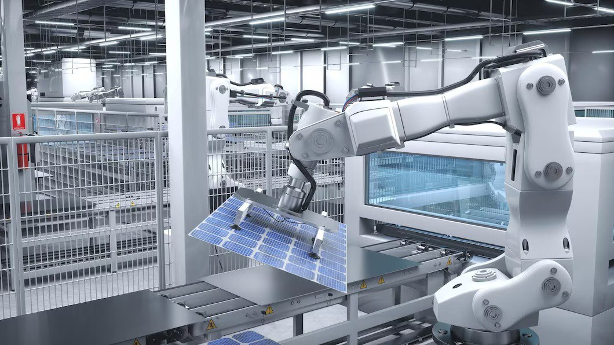

Професії
майбутнього
Майбутнє праці надає нові можливості та виклики для розвитку професійного світу. З технологічними змінами, що постійно відбуваються, з'являються нові потреби та можливості для працівників різних секторів економіки. Однак, разом з цими можливостями, приходить і необхідність адаптуватися до швидко змінюючогося ринку праці.
Існуючі професії:
Професії майбутнього в свiтi розвиватимуться у напрямку інновацій та технологічного прогресу. За останні десятиліття відбувається швидка цифрова трансформація, що змінює потреби ринку праці. У майбутньому особливо важливими будуть навички володіння інформаційними технологіями, а також навички комунікації, креативності та аналітичного мислення. Такі професії вимагатимуть постійного навчання та адаптації до змін у суспільстві та технологіях.
-
Спеціаліст з ШІСпеціалісти з штучного інтелекту (ШІ): Розвиток технологій штучного інтелекту створює попит на фахівців, які розуміють ШІ і можуть застосовувати його в різних галузях, включаючи медицину, фінанси, автоматизацію виробництва та інше.
-
Інженер з автоматизаціїІнженери з автоматизації: Із зростанням автоматизації виробництва та послуг зростає і попит на фахівців, які можуть розробляти, впроваджувати та обслуговувати роботів та автоматизовані системи.
- 
-
Спеціаліст з кібербезпекиСпеціалісти з кібербезпеки: З великим обсягом даних, які зберігаються онлайн, поширенням Інтернету речей (IoT) та іншими цифровими технологіями, захист від кіберзагроз стає надзвичайно важливою сферою.
-
Екологічний фахівецьЕкологічні фахівці: Зростаюча увага до екологічних проблем породжує попит на спеціалістів, які можуть розробляти та впроваджувати екологічно чисті технології, вести дослідження в галузі відновлюваної енергії та займатися екологічними аналізами.
-
БіоінженерБіоінженер: Зростаюче наукове дослідження у галузі генетики, технології клітинної терапії та інші медичні інновації потребує фахівців, які можуть застосовувати ці технології в практиці.
-
Спеціаліст з VRСпеціалісти з віртуальної реальності та доповненої реальності: Розвиток віртуальної та доповненої реальності відкриває нові можливості у галузі навчання, розваг, медицини та інших сферах, потребуючи спеціалістів з розробки контенту та платформ.
-
 РобототехникаРобототехнік: В сучасному світі робототехніка відіграє ключову роль у вирішенні різних завдань, починаючи від автоматизації виробництва до медичних досліджень. Робототехніки займаються розробкою, проектуванням та створенням роботів та автоматизованих систем, використовуючи знання з електроніки, програмування та інженерії.
РобототехникаРобототехнік: В сучасному світі робототехніка відіграє ключову роль у вирішенні різних завдань, починаючи від автоматизації виробництва до медичних досліджень. Робототехніки займаються розробкою, проектуванням та створенням роботів та автоматизованих систем, використовуючи знання з електроніки, програмування та інженерії. -
.jpg) Контент-креаторКонтент-креатор: У світі цифрових медіа зростає попит на творчих індивідуумів, які створюють різноманітний цифровий контент для онлайн-аудиторії. Контент-креатори розробляють відео, фотографії, тексти та аудіо, щоб надихати, розважати та інформувати свою аудиторію через соціальні медіа та інтернет-платформи.
Контент-креаторКонтент-креатор: У світі цифрових медіа зростає попит на творчих індивідуумів, які створюють різноманітний цифровий контент для онлайн-аудиторії. Контент-креатори розробляють відео, фотографії, тексти та аудіо, щоб надихати, розважати та інформувати свою аудиторію через соціальні медіа та інтернет-платформи.


Професії майбутнього відображають швидкі зміни в технологічному та соціальному середовищі. Розвиток штучного інтелекту, віртуальної реальності, робототехніки та інших інноваційних галузей відкриває нові можливості для створення та розвитку нових професій.
Автор роботи: учениця 10 класуГоловченко Марія